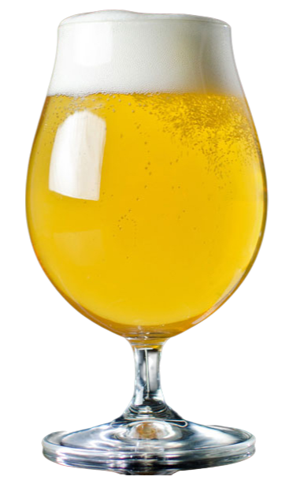
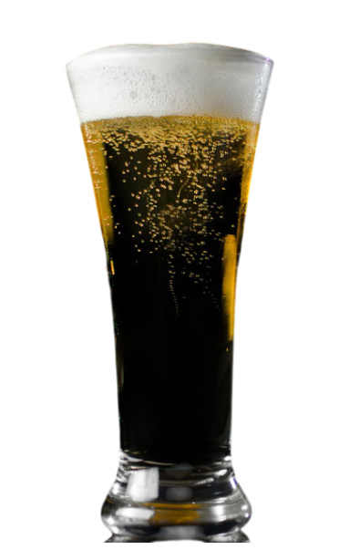
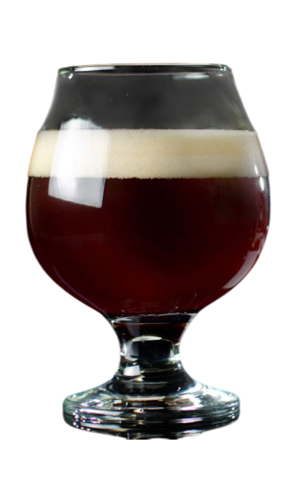
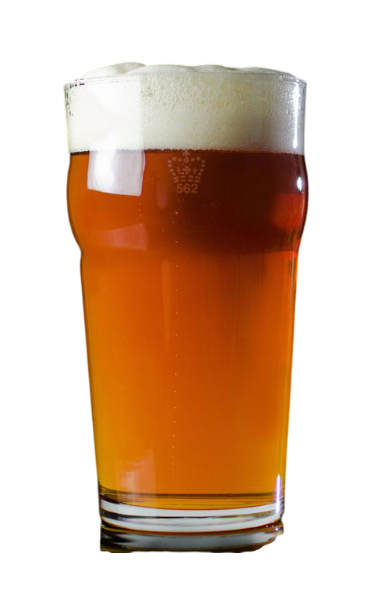
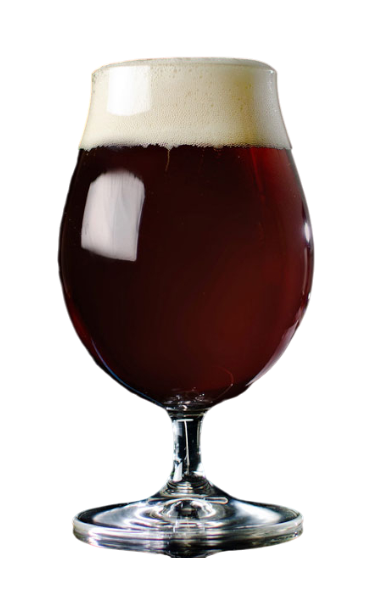
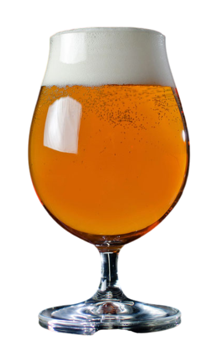
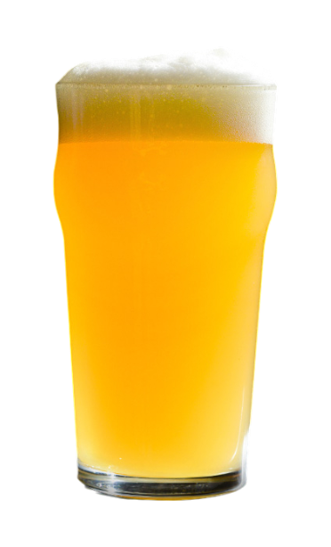
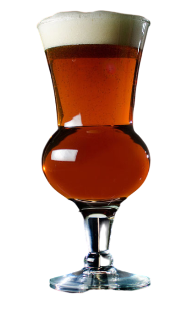

Каталог стилів пива
-
Світлий Ель
Один із найбільш легких для сприйняття стилів, золотий або світлий ель – це питке пиво з привабливим зовнішнім виглядом, без яскраво виражених солодових або хмільних ноток. Округле та м’яке, воно є американською класикою, відомою своєю простотою. Іноді його називають «золотий ель». У такі пива можуть додавати мед, спеції або фрукти, а ферментація може проводитися лагеровими або елевими дріжджами.
-
Чеський Пльзенер
Чеський пльзенер має легку солодкість і виразний солодовий смак з підсмаженими нотками, схожими на печиво або хліб. Гіркота хмелю середня, а аромат і смак хмелю благородного типу – від низького до середньо-низького рівня. Цей стиль виник у 1842 році, а назва «пльзенер» спочатку вказувала на місцевість у Чехії.
-
Британський Ячмінний Ель
Назва «Британський ячмінний ель» позначає групу міцних елів, які можуть конкурувати за міцністю та складністю зі світовими відомими напоями. Цей потужний солодовий стиль пива зазвичай є одним із найміцніших у будь-якому пивному меню і демонструє складну комбінацію карамельних та фруктових смаків, збалансованих зігріваючим алкоголем та стійкою хмільною гіркотою.
-
Каліфорнійський Лагер
Каліфорнійський лагер виготовляється з лагерових дріжджів, але ферментується за температури елів. У смаку та часто в ароматі відчутні підсмажені та/або карамельні солодові нотки. Часто його називають «steam beer» і прославила ця технологія пивоварня Anchor у Сан-Франциско. Хміль Northern Brewer додає деревні та м’ятні відтінки.
-
Німецький Бок
Традиційні боки - це пиво, виготовлене лише з солоду, з високим вмістом солодкості. Солодовий характер повинен поєднувати солодкість із підсмаженими або горіховими нотками. Назва «Бок» перекладається як «GOAT»!
-
Імперський Індійський Світлий Ель
Імперський Індійський Світлий Ель характеризується високою гіркотою, насиченим смаком і ароматом хмелю. Хмільний характер свіжий і виразний завдяки використанню різних сортів хмелю. Цей стиль покликаний підкреслити свіжий і виразний хмільний характер.
-
IPA Нової Англії
Підкреслює аромат і смак хмелю без сильної гіркоти, активно використовує пізнє та сухе хмелювання, щоб створити яскравий фруктовий, тропічний хмільний смак.
-
Шотландський Ель
Шотландські елі варіюються залежно від міцності та смаку, але загалом зберігають солодовий характер з певними нотками карамельного солоду та м’якою, «жувальною» текстурою.